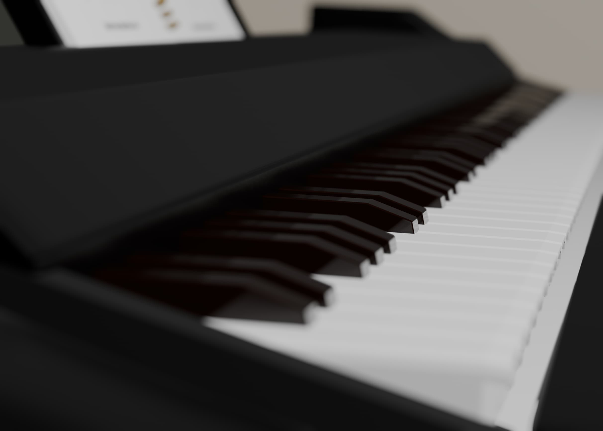

Ma Chambre isométrique
Modélisation 3D - Blender



Projet personel. Ma Chambre isométrique est une modélisation 3D réalisée sur Blender, pensée comme un premier grand exercice complet autour de mon propre espace de vie dans un format isométrique. L'objectif : structurer et mettre en volume un intérieur familier en environ 8 heures de travail afin d'approfondir mes bases en modélisation 3D, tout en soignant l'organisation de l'espace et la lecture globale de la scène. Modélisation & détails : la pièce rassemble plusieurs éléments de mobilier et d'ambiance — lit, espace bureau, coiffeuse avec miroir, piano numérique et porte — avec un jeu de cadrages alternant vue isométrique d'ensemble et plans rapprochés. Matières & lumières : le rendu mise sur des teintes neutres, un parquet sombre et un éclairage doux afin de créer l'atmosphère calme et réaliste de ma chambre tout en mettant en valeur les volumes. Mise en scène & rendu : les différents angles de vue permettent de passer d'une lecture globale et miniature de la chambre à des détails plus intimes, soulignant ce premier gros projet Blender.